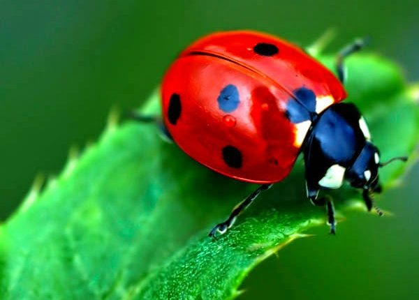

Como cheguei nessa ideia?
Quando nós pensamos em proteger as plantações, os pesticidas são como heróis, combatendo as pragas e mantendo os alimentos seguros. Porem esses pesticidas são cruciais para a saúde das abelhinhas, que fazem o serviço de polinização. Elas tem sofrido bastante com esses pesticidas, como nós podemos ver no ano de 2023, que aproximadamente 112 milhões de abelhas morreram intoxicadas por pesticidas e inceticidas, o que coloca em risco não só a produção de alimentos, mas também a biodiversidade do planeta.
Pensando sobre o assunto, me surgiu uma pergunta: Será que da para ajuda-las a se tornarem mais resistentes aos pesticidas?
Uma ideia é usar a engenharia genética, tipo dar uma "turbinada" nas abelhinhas para elas lidar melhor com esses produtos químicos.
Para começar, eu peguei uma espécie de abelha que está sendo ameaçada em extinção, a Melipona rufiventris.
Melipona rufiventris

Melipona rufiventris também chamada de tujuba, teúba ou uruçu-amarela é uma abelha social brasileira, da tribo dos meliponíneos. Essa espécie apresenta o tegumento com a coloração variando do negro ao ferrugíneo com abundante desenho arruivado e corpo coberto de pelos ferrugíneos/amarelados.
wikipedia
Agora, como eu vou deixar as abelhinhas resistentes?
Tem uma enzima chamada "esterase" que é resistente a uns tipos de pesticidas comuns.
Esterase

As esterases são enzimas pertencentes à classe das hidrolases que catalizam a reacção de hidrólises de ligações éster.[1].
R-CO-O-R' + H2O ⇄ R-COOH + HO-R'
A categoria da esterase compreende diversas subcategorias, entre as quais a lipase e a colinesterase.
wikipedia
Melipona rufiventris

Melipona rufiventris também chamada de tujuba, teúba ou uruçu-amarela é uma abelha social brasileira, da tribo dos meliponíneos. Essa espécie apresenta o tegumento com a coloração variando do negro ao ferrugíneo com abundante desenho arruivado e corpo coberto de pêlos ferrugíneos/amarelados.
Coccinellidae

Joaninha é o nome comum dos insetos coleópteros da família das Coccinellidae. As espécies desta família, geralmente, têm o corpo semiesférico com élitros vermelhos sarapintados de manchas pretas
Como vou fundir os DNAs:
- Identificação de genes específicos: Identificar os genes de interesse em cada espécie que você deseja combinar. Isso poderia incluir genes responsáveis por características específicas que você deseja incorporar no organismo resultante.
- Isolamento de DNA: Extrair o DNA de uma abelha e de uma joaninha. Isso geralmente é feito a partir de amostras de tecido, como músculo ou antena.
- Edição de genes: Utilizar técnicas de edição de genes, como CRISPR-Cas9, para inserir, remover ou modificar os genes desejados nos genomas da abelha e da joaninha. Isso exigiria uma compreensão profunda da função dos genes e de como eles interagem.
- Criação de embriões híbridos: Após a modificação genética das células-tronco ou embriões das duas espécies, essas células modificadas seriam combinadas para formar embriões híbridos. Isso poderia ser feito em laboratório, mas novamente, é altamente especulativo e não necessariamente viável com a tecnologia atual.
- Desenvolvimento e criação: Os embriões híbridos seriam então cultivados até a fase adulta e cuidadosamente monitorados para avaliar qualquer alteração nas características resultantes da combinação dos genomas das duas espécies.
Características e seu Objetivo
Estou visualizando um animal com um tamanho semelhante ao de uma abelha, o que facilitaria o acesso às flores. Ele teria asas capazes de voar e visitar várias plantas, assim como as abelhas, e mandíbulas adaptadas para se alimentar de pragas, como os pulgões. E, é claro, manteria o comportamento social das abelhas, o que garantiria a eficiência na colônia.
 19.19.33_72359f55.jpg)
Criada por IA